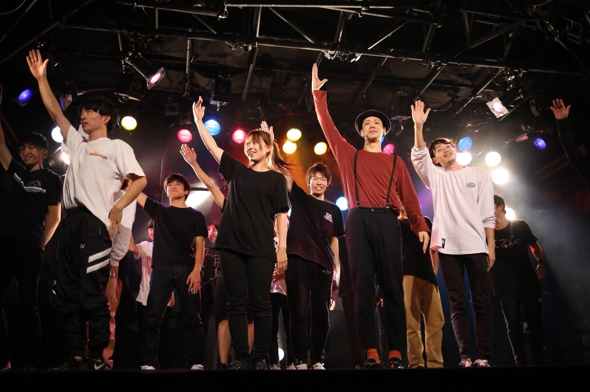
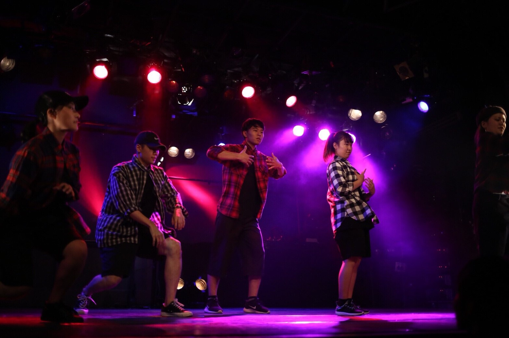
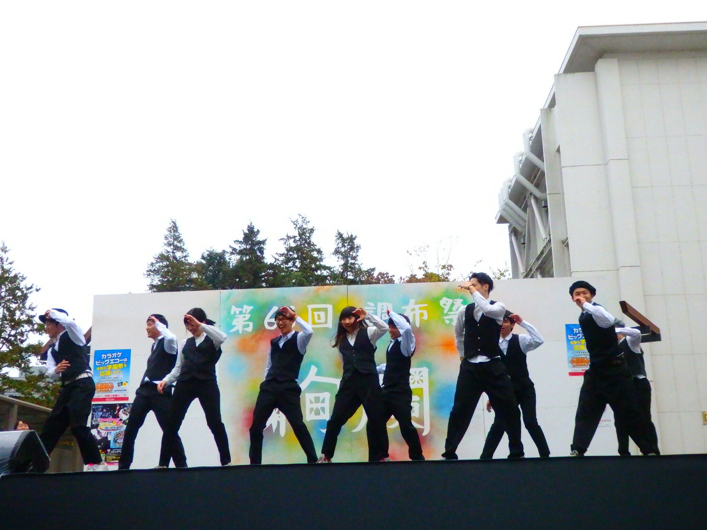
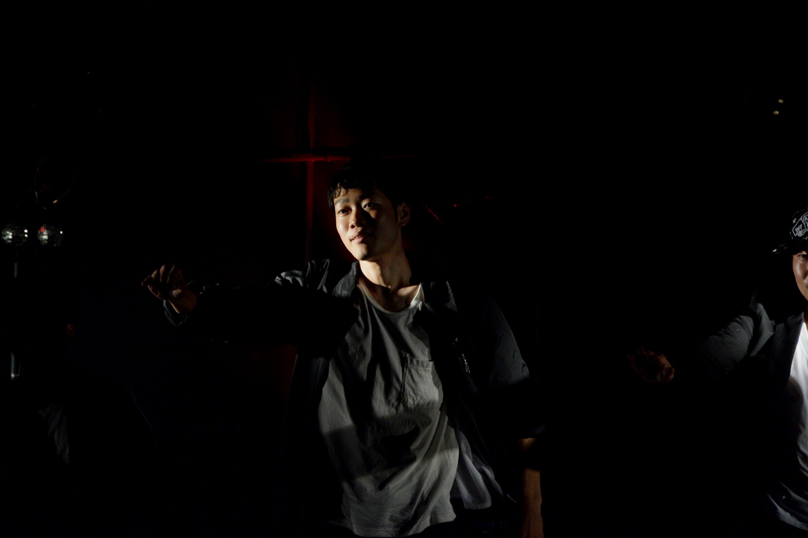
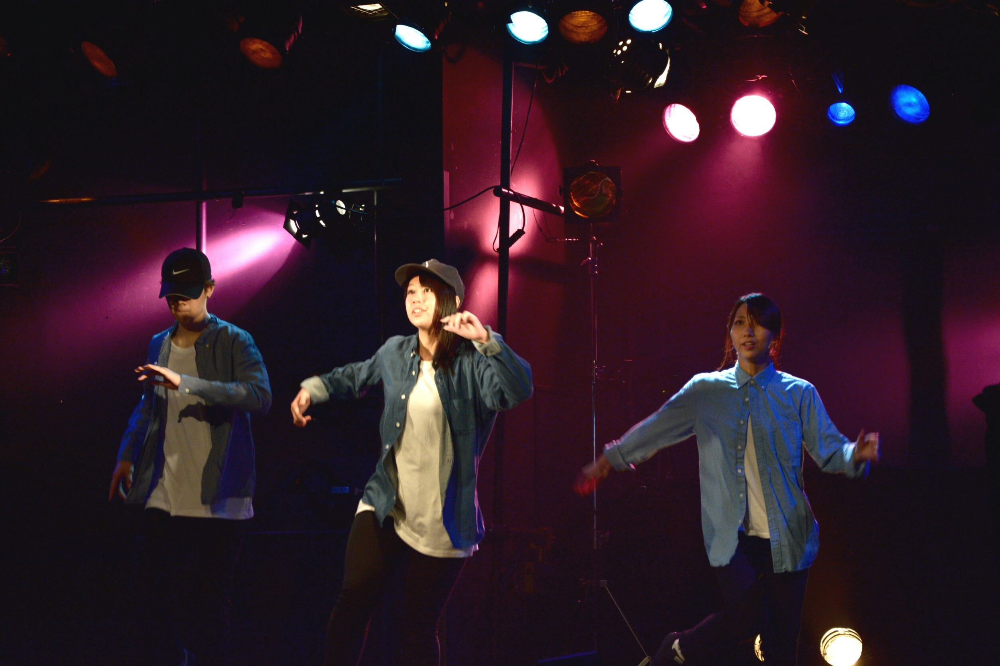
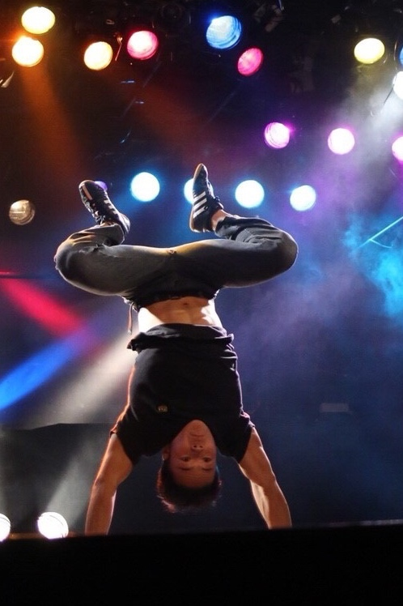
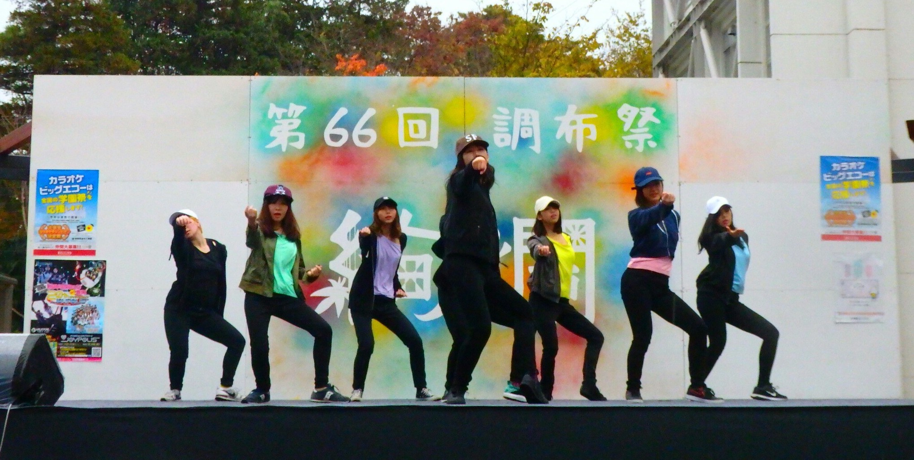

ストリートダンス同好会とは
What's the Street Dance?
ひたすらに、
踊る。
ただダンスを愛する人たちが集う場所。
皆、我を忘れて踊り狂っている。
大学からダンスを始める人がほとんどで、上手い下手は気にしない。
楽しく踊れればそれでいい。
ただダンスを愛する人たちが集う場所。
皆、我を忘れて踊り狂っている。
大学からダンスを始める人がほとんどで、上手い下手は気にしない。
楽しく踊れればそれでいい。
踊るだけじゃない
Not only dancing.
毎日が
イベント。
毎年夏に行われる合宿2泊3日の合宿。
6月には新入生を交えて新歓バーベキュー。
その他数え切れないほど充実したイベントの数々。
もう、楽しすぎて、実験レポートなんか忘れちゃう。
毎年夏に行われる合宿2泊3日の合宿。
6月には新入生を交えて新歓バーベキュー。
その他数え切れないほど充実したイベントの数々。
もう、楽しすぎて、実験レポートなんか忘れちゃう。
Details
|詳しい活動内容
-
練習日月,金 16:00〜22:00 土 12:30〜16:00
-
部員構成1年:6人 2年:10人 (計16人)
-
練習場所生協会館4階 (多目的ホール)
-
主なイベント4月: 新歓ダンス
6月: 新歓バーベキュー
9月: 夏合宿, UEC-night
11月:調布祭ダンス
3月: 春合宿, UEC-night

Activities
|最近の活動
-
調布祭 2017.07.01テキストテキストテキストテキストテキストテキストテキストテキストテキストテキストテキストテキストテキストテキストテキストテキストテキストテキスト
-
調布祭 2017.07.01テキストテキストテキストテキストテキストテキストテキストテキストテキストテキストテキストテキストテキストテキストテキストテキストテキストテキスト
- Tweets by UEC_Integral_SD
Dance genre
|ダンスジャンル
- 
- 
- 
- 
- 
- 